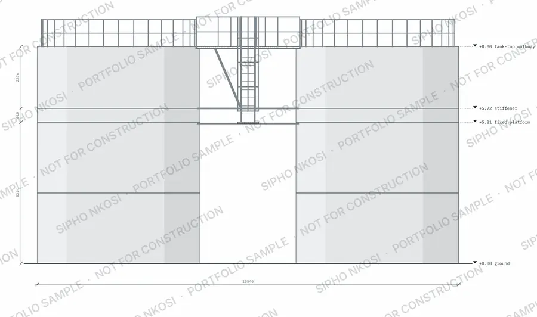
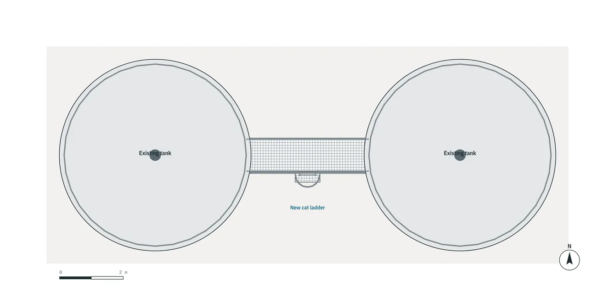
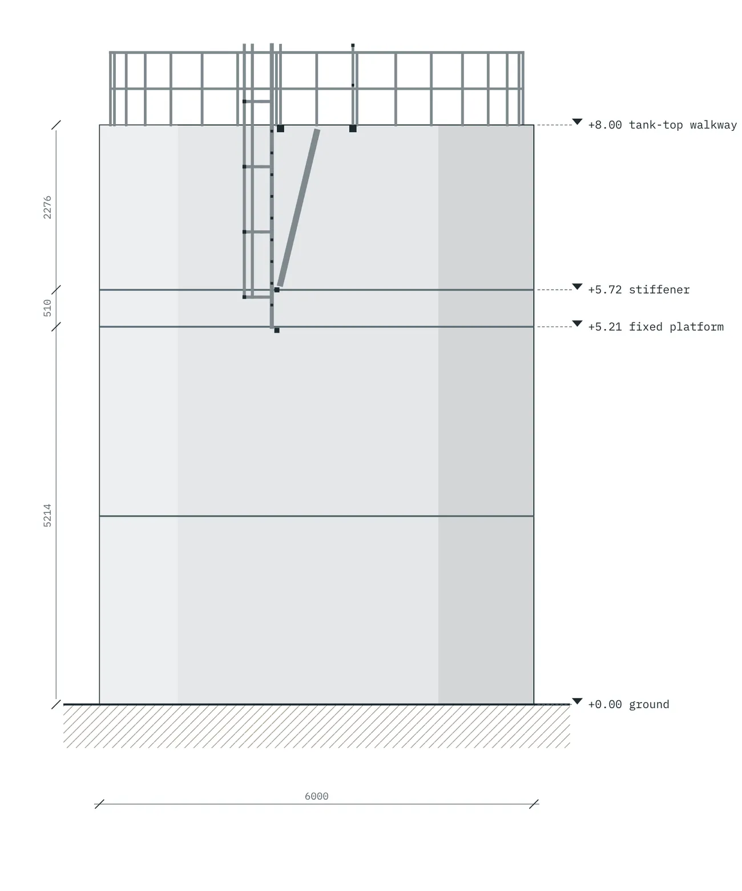
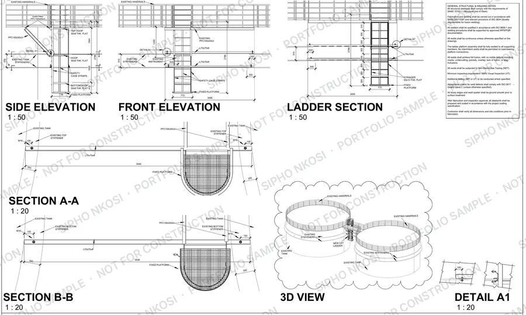

Problem statement
Operators needed safe access down from the existing walkway into the space between two existing 20D tanks. Any new steel had to be fixed to the existing structure without new foundations.
Scope
What I was asked to deliver
Design and detail a caged access ladder with its supports and a landing platform, fixed to the existing tanks and walkway.
Solution
How I solved it
- Hung a 2.786 m caged ladder from the existing walkway, with rungs at 305 mm and 65 × 10 flat stringers.
- Carried it on L70 × 70 × 8 brackets bolted with M16 bolts to the existing tank stiffeners, with no welding to the tank shells and no new foundations.
- Fitted a 50 × 8 hoop cage with safety straps, and a 772 mm semicircular grating platform at the bottom.
- Revised the ladder orientation (Rev 1) and the support arrangement (Rev 2) after site review.
3D model
Watch it go together
Build sequence
Drag to orbit · scroll or pinch to zoom · right-drag to pan
Drawings
Plans, elevations & sections



Drawing set as issued
The original fabrication & construction sheets
